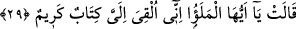
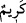

göndermesi, onda ilim, hikmet ve düzgün bir firâset gördüğünden ve onun bir mâzereti
kalmaması içindir.
et-Te’vîlâtü’n-Necmiyye’de der ki: “İşâret etmektedir ki hüdhüd verdiği haberde
doğru söyleyince, melikine karşı pek samimi olunca ve hakkı gözetince, bunların
karşılığını görüp sûretinin ve mânâsının zayıflığına rağmen Hakk’ın rasûlünün elçiliğine
ehil oldu.”
“Onu kendilerine ver,” yâni Belkıs ve kavmine bu mektubu bırak. Çünkü hüdhüd
“Onun ve kavminin, Allah’ı bırakıp güneşe secde ettiklerini gördüm” sözünde kavmini
de Belkıs’la birlikte zikretmişti.
el-İrşâd’da der ki: “Zamirin çoğul olarak kullanılması, değerli mektubun içeriğinin
onların hepsini İslâm’a dâvet olduğundan dolayıdır.”
“Sonra onlardan biraz çekil de,” yâni onlara yakınlığı terk edip gizleneceğin ve
onların ne cevap vereceğini işiteceğin bir yere uzaklaşarak onlardan ayrıl da “ne
sonuca varacaklarına” yâni birbirlerine ne söyleyeceklerine, sözü ne şekilde
söyleyeceklerine “bak.” öğren.
Rivâyete göre hüdhüd mektubu aldı ve Belkıs’ın yanına vardı. Onu Me’rib’deki
köşkünde uyurken buldu. O, uyurken kapıları kilitler, anahtarları başının altına koyardı.
Hüdhüd, bir menfezden girdi ve mektubu sırt üstü uzanan Belkıs’ın göğsünün üstüne
bıraktı. Korkarak uyandı. Hımyerli Tubba’ın neslinden olduğu için Arapça okur yazardı.
Mektubun mührünü görünce irkildi ve boyun eğdi. Çünkü Süleyman (a.s.)’ın
hükümranlığı mühründe gözüküyordu. Kuşların kendisine itâat etmesinden ve mührünün
şeklinden mektubu gönderenin kendisinden daha büyük bir hükümdar olduğunu anladı.
Bu yüzden kavmine:
29. “Ey ileri gelenler, bana çok önemli bir mektup bırakıldı” dedi.
Belkıs üç yüz on üç yahut on iki bin kişi olan kavminin ileri gelenlerine “Ey ileri
gelenler,” yâni ey eşrâf topluluğu “bana çok önemli” hayret verici bir mühürle
mühürlenmiş ve alışılmamış bir yolla bana ulaştığından benim için çok kıymetli ve
saygıdeğer “bir mektup bırakıldı” dedi.”
“ bir topluluğun gözleri mehâbet ve kalbleri ululukla dolduran büyükleridir.
el-Es’iletü’l-müfhıme’de der ki: “Süleyman (a.s.)’ın mûcizesi yüzüğündeydi.
Hükümranlığı kendisinde olan mührü ile mektubu mühürledi. Böylece Belkıs’ın kalbine
korku saldı. Böylece Süleyman (a.s.)’ın mûcîzesini ortaya koyarak mektubun
önemli/değerli olduğuna şâhidlik etti.”
Bu, “in burada “mühürlenmiş” mânâsına geldiğine Rasûlullah (s.a.)’in
“Mektubun keremi/değeri, onun mührüdür.”[59] hadîsi de delâlet etmektedir. İbn